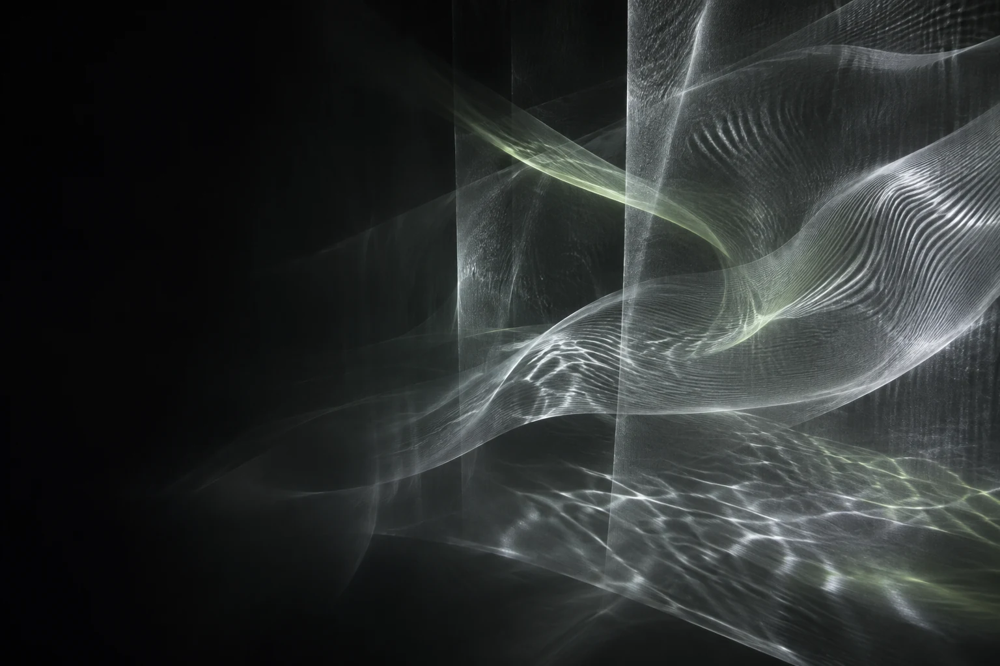

2026 — 2027 · Research visit
Pennsylvania State University
Visiting Scholar
August 2026 – March 2027

Hong Kong Baptist University · Penn State
Researcher, Educator &
Digital Creator
PhD candidate at Hong Kong Baptist University. Visiting scholar at Penn State. Founder of Hong Kong Sound Cocoon Limited. Working across embodiment, immersive media, and digital health.
Embodiment / Media / Interaction
01 · About
My work connects university teaching and media production with research on embodied experience, technology-mediated communication and digital health. I am completing a PhD in Communication at Hong Kong Baptist University, with expected completion in August 2027, and undertaking a research visit at Penn State through March 2027.
In the Department of Visual Communication and New Media Art at Sichuan University of Media and Communications, I taught Short Filmmaking and Internet Video Product Development and supervised dissertations, graduation projects and creative work for competitions. From September 2023, alongside my doctoral studies, I continued student supervision and returned during university vacations for intensive course teaching.
My practice includes photography, film and video production, independent content creation and creative technology entrepreneurship. I founded Chengdu Yingshe Media Co., Ltd., where I managed video production for school promotional films and television commercials. I also founded Sound Cocoon and serve as Principal Investigator of The Spatial Microphone project.
Background & experience2026 — 2027 · Research visit
Visiting Scholar
August 2026 – March 2027
2023 — Present
PhD in Communication
Expected completion: August 2027
2018 — 2019
Master of Digital Communication and Culture
2013 — 2017
BA Honours in International Communications Studies
Completed June 2017
02 · Research
I study how media and technology shape embodied experience, cognition and health communication.
Embodied cognition, immersive narrative experiences and the relationship between media, perception and cognition.
Technology-supported cognition and reasoning, including current work on mastery goals and LLM extraction support.
Health communication, digitally mediated health practices and the design and adoption of health technologies.
03 · Creative Practice
Film and video production, photography, independent content creation and technology entrepreneurship.
Creative Technology · 2025 - present
Creative technology entrepreneurship and The Spatial Microphone, an Inno Realisation Fund-supported project.
Founder and Principal Investigator of The Spatial Microphone
I founded Sound Cocoon and lead The Spatial Microphone as Principal Investigator. The project received HK$300,000 from the Inno Realisation Fund, supported by Hong Kong Baptist University and Hong Kong Science and Technology Parks Corporation.
Film and Video Production · 2021 - 2023
Video production for school promotional films and television commercials through Chengdu Yingshe Media.
Founder
I founded and managed Chengdu Yingshe Media Co., Ltd., delivering video production for school promotional films and television commercials. Selected work included a Universiade-related promotional film.
Photography and Moving Image · November 2018 - June 2019
Photography and video production experience at Sydney Splendid Studio, contributing to client and brand productions.
Photo and Video Department, Sydney Splendid Studio
At Sydney Splendid Studio, I produced photography and video content for client projects. My contributions included productions for Australia Bridal Guide, Jimmy Choo Spring/Summer 2019, Superdry Swim and Sydney World Square Cherry Blossom Festival.
Digital Media Practice
Model cars, toys, unboxing and reviews — ongoing hands-on practice with digital media and platform storytelling.
Xiao She on Xiaohongshu
I create content featuring model cars, toys, unboxing and reviews on Xiaohongshu, combining hands-on media production with ongoing experience of platform-based storytelling.
Alongside media practice, I explore digital tools and interactive prototypes. Here are two public projects from my GitHub.
Explore GitHubDigital prototype
A quiet movement journal with optional activity details, history and rest notes. Records are stored in the current browser.
Digital prototype
A Cantonese practice journal and personal phrasebook, with optional Jyutping, practice history and local browser storage.
04 · Curriculum Vitae
Education, university teaching, research and creative practice.
05 · Contact
For academic, teaching and creative enquiries, please contact me by email.